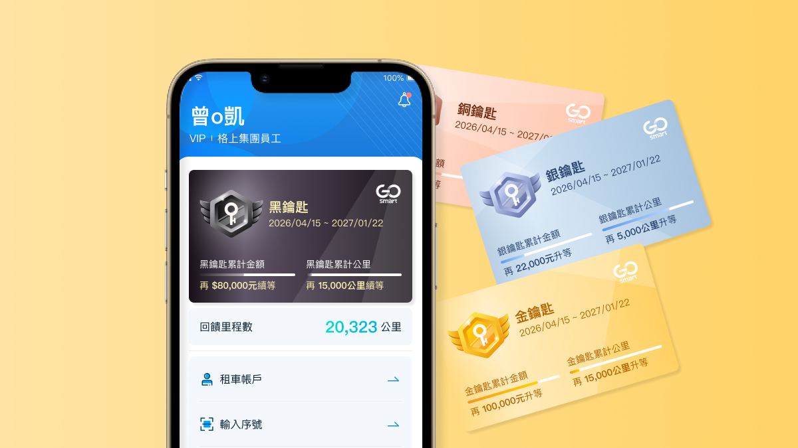
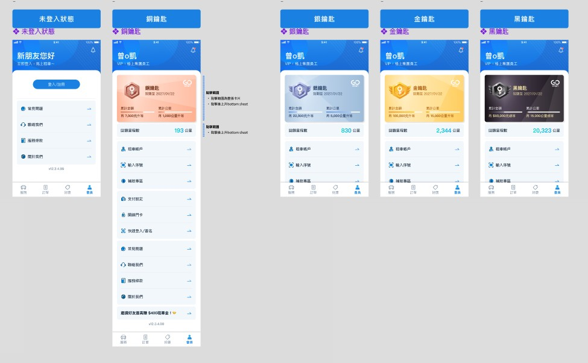
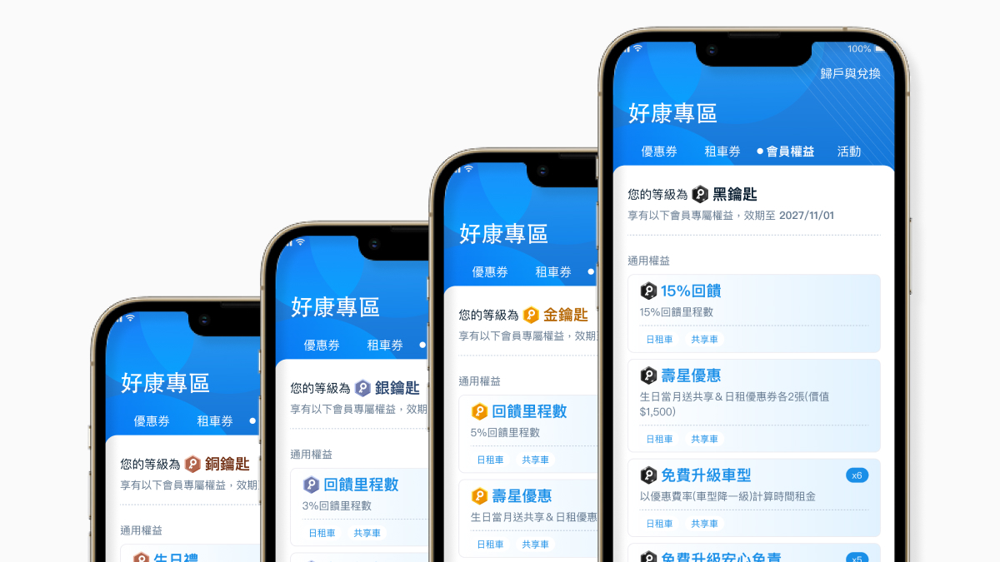
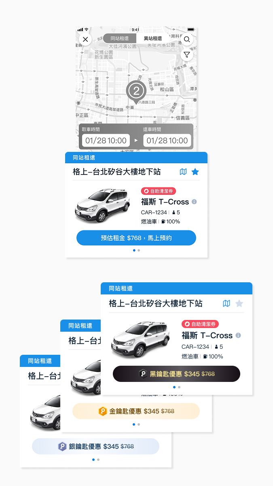
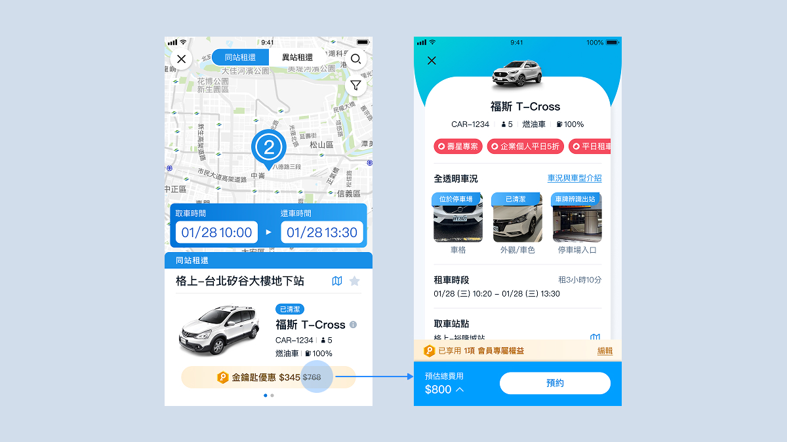
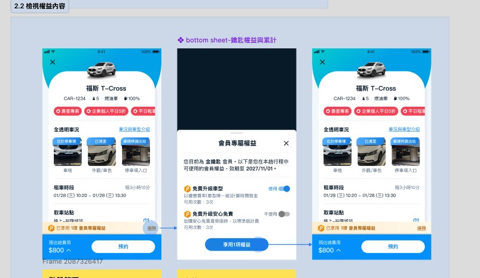
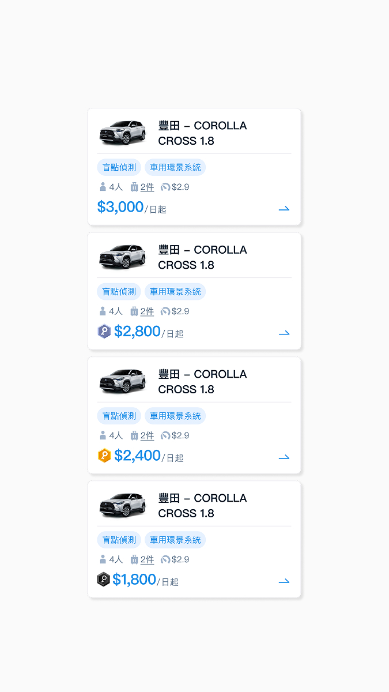
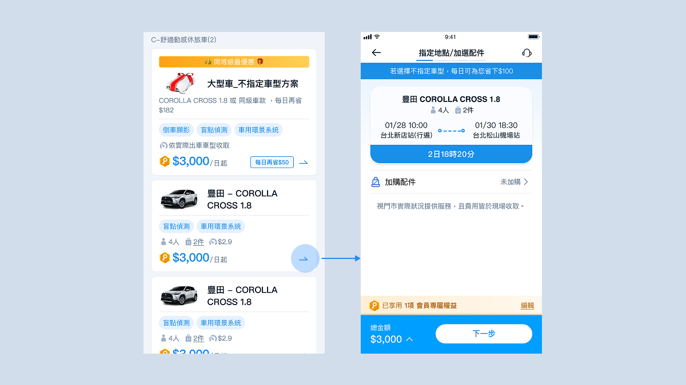
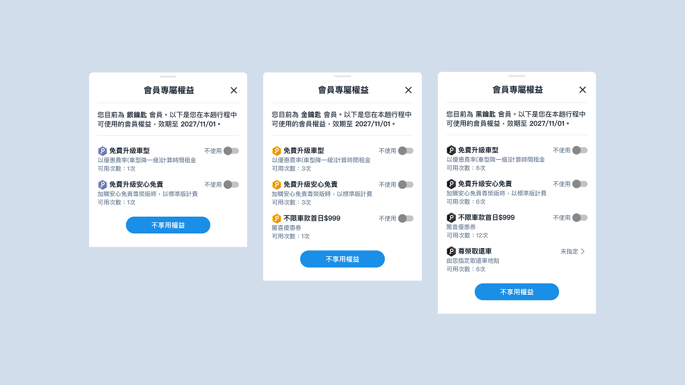
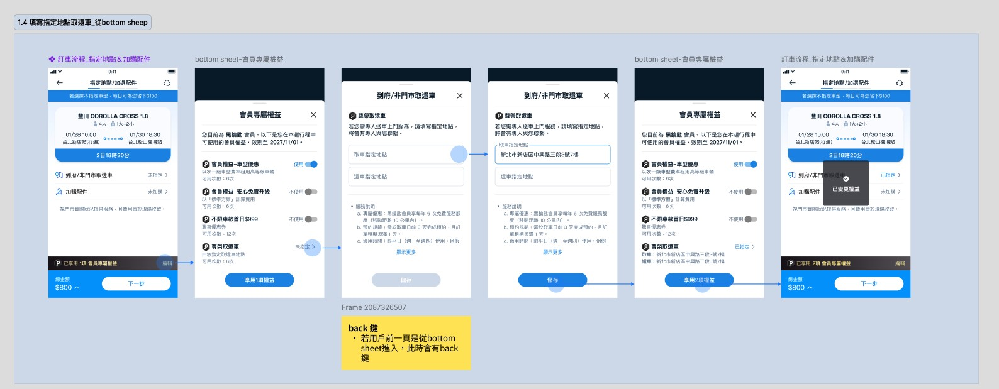

WORK・會員服務
格上 GoSmart 過去雖已建置會員系統，但一直沒有深入規劃會員分級的實際運營。這次由行銷單位訂定銅、銀、金、黑四級會員制度後，我負責將分級規則轉譯為統一的鑰匙識別系統與視覺規範，並在共享車、日租等服務團隊之間協調討論，將權益逐一落地進不同服務的預訂流程。
合作對象
格上 GoSmart
專案時間
2025
專案類型
App
負責內容
UX規劃、Design System

帳戶頁依會員等級切換主視覺色彩與圖騰，是整套識別系統的起點。
成果與結論
本專案為 GoSmart 建立一套跨服務的會員等級識別系統，統一定義銅、銀、金、黑四種鑰匙身份的視覺語言與互動邏輯，並將對應權益完整整合進共享車與日租兩大服務的預訂流程，讓會員體驗第一次在不同服務別之間保持一致。
種
鑰匙會員身份狀態
項
服務流程完整整合
%
行銷單位提案滿意度
本專案重點
格上 GoSmart 雖然原先就有會員系統，但過去並未針對會員分級進行深入的企劃與運營，各服務線也沒有依會員身份呈現差異化的內容。這次由行銷單位規劃導入銅、銀、金、黑四級會員制度後，這個任務的難處不在於新增一個「會員頁面」，而是要讓等級識別滲透進共享車、日租等既有服務的每一個操作環節。我在專案中扮演不同服務別團隊之間的溝通橋樑，逐一釐清共享車、日租等各服務別在會員識別、權益顯示、操作互動上各自會遇到的狀況，再收斂成一套可共用的識別系統與整合原則，最後落地到實際畫面。
本專案設計流程
本專案沒有另外安排前期使用者研究，而是以行銷單位既定的會員制度規劃為起點，直接展開跨單位盤點與識別系統定義，逐步收斂出可落地到各服務別的整合原則。
檢視共享車、日租、App 帳戶頁等既有介面，釐清哪些畫面需要納入會員身份呈現。
訂定銅、銀、金、黑鑰匙的視覺語言與識別規則，作為跨服務共用的設計基礎。
與共享車、日租團隊逐一討論會員權益在各自流程中的顯示時機與互動方式。
依原則產出各服務別的實際畫面，並持續與各單位確認可行性與一致性。
設計挑戰
會員識別橫跨行銷單位定義的四種鑰匙等級，也橫跨共享車、日租等既有服務，這個任務的核心不是新增一個畫面，而是解決三個彼此牽動的挑戰。
Bridge
◆
在共享車、日租等不同服務別團隊之間釐清規則、對齊共識，是落地前必須先解決的溝通課題。
Extend
◆
把單一識別系統延伸進共享車、日租等既有服務的完整預訂流程，而非只是新增一個會員頁面。
Consistency
◆
確保會員身份在不同服務、不同畫面之間，維持一致的視覺語言與互動邏輯。
訂立目標
GoSmart 過去雖然已有會員系統，但沒有深入規劃會員分級的實際運營，帳戶頁、好康專區、共享車與日租流程也各自只呈現單一版本。這次由行銷單位訂定銅、銀、金、黑四級會員制度後，設計的核心目標收斂為兩個方向——建立一套跨服務共用的識別系統，並將對應權益逐一落地進既有服務流程。
為落實上述目標，後續具體展開為 4 個改動方向
定義四種鑰匙的主色、圖騰與累計說明文字，作為所有服務套用的共同基礎。
依會員等級顯示對應的專屬優惠與升等權益。
在地圖、預約、方案比較頁加入等級標籤與折抵金額，並提供權益使用的 bottom sheet。
依訂車流程每個節點逐一比對，加入對應的會員權益設定與差異化服務。
設計說明
以帳戶頁作為識別系統的核心試驗場，定義銅、銀、金、黑四種鑰匙等級各自的主色、圖騰與累計說明文字，並延伸進 App 內的好康專區，作為後續套用到其他服務的視覺基礎。

帳戶頁依鑰匙等級切換主視覺色彩與圖騰，並在卡片內呈現當期累計金額與回饋里程。

好康專區依會員等級顯示對應的專屬優惠與升等權益，是識別系統延伸到功能頁面的第一個場景。
四種鑰匙各自定義主色與圖騰，讓用戶一眼辨識自己的等級，也讓後續各服務別套用時有共同依據。
識別系統以元件而非單一頁面設計，確保同一套視覺語言能套用進不同服務、不同版位的畫面。
設計說明
共享車流程原本只呈現單一租金，本次在地圖、預約、方案比較頁逐一加入等級標籤與對應折抵金額，並在確認頁提供權益使用的 bottom sheet，讓用戶清楚知道自己享有哪些權益、還剩多少可用次數。

同站租還流程依會員等級呈現不同折扣方案，銀／金／黑鑰匙與無會員版本並列呈現價差。

從地圖頁選擇車輛進入明細頁，等級折扣與已享用的權益狀態會延續呈現於預約按鈕上方。

點擊已享用權益區塊會開啟 bottom sheet，列出會員專屬權益的使用開關與可用次數。
在瀏覽階段就顯示等級折抵金額，用戶不需進到結帳頁才發現優惠。
部分權益（如免費升級車型）提供開關讓用戶自行決定是否使用，避免非必要地消耗可用次數。
設計說明
日租流程的服務節點更多，除了車輛列表頁的等級價格差異，還包含加購配件、指定地點取還車、到府／非門市取還等專屬權益，本次依訂車流程的每個步驟逐一比對，並加入對應的會員權益設定。

車輛列表卡片依會員等級呈現不同起訂價格，無權益（銅鑰匙）與銀／金／黑鑰匙的價差一目瞭然。

符合升等資格的會員於加選配件頁會自動帶入車型升級優惠，不需額外操作即可享用。

日租的會員專屬權益 bottom sheet 依銀／金／黑鑰匙呈現不同可用次數與服務內容，黑鑰匙額外開放尊榮取還車服務。

黑鑰匙會員可從 bottom sheet 直接填寫指定取還車地點，完成後會自動更新回訂車流程的權益使用狀態。
黑鑰匙獨有的「尊榮取還車」等高價值服務只在對應等級開放，強化等級之間的權益落差。
從 bottom sheet 填寫的地點資訊會直接回寫到主流程，避免用戶重複輸入或流程中斷。